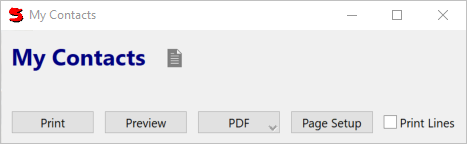

Okay, so you've entered some contacts and now you want to print out a list
of them, so we'll create a report. Create a new record in your library called
My_ContactsReport
#(Params
title: "My Contacts"
(Query
query: mycontacts
)
)
and then run:
Window(My_ContactsReport)
You'll see a window with three buttons - Preview, Print, and Page Setup. Preview will display your report a page at a time in a window. Page Setup and Print bring up the standard Windows dialogs, allowing you to configure the printer and print the report.
Choose Preview to display your report to the screen.